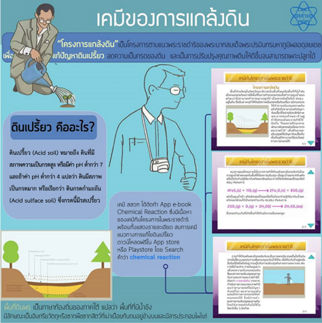

สิทธิบัตรการประดิษฐ์เลขที่ 22637
จากพระราชดำริของพระบาทสมเด็จพระปรมินทรมหาภูมิพลอดุลยเดช ให้ดำเนินโครงการ "แกล้งดิน" ซึ่งเป็นโครงการที่ทดลอง แก้ไข ปรับปรุง จนได้วิธีที่เหมาะสมในการแก้ไขปัญหาดินเปรี้ยว และด้วยพระปรีชาสามารถทางด้านการเกษตร และด้านนวัตกรรมของพระองค์ ทำให้สามารถยกระดับความเป็นอยู่ของพสกนิกรชาวไทยให้ดีขึ้น สำนักงานคณะกรรมการพิเศษเพื่อประสานงานโครงการอันเนื่องมาจากพระราชดำริ (สำนักงาน กปร.) รู้สึกซาบซึ้งในพระมหากรุณาธิคุณของพระองค์ ที่ได้ทรงบำเพ็ญพระราชกรณียกิจมากมายและหลากหลาย ซึ่งล้วนเป็นคุณประโยชน์อย่างใหญ่หลวงต่อชาวไทยและชาวโลก จึงได้ยื่นขอจดสิทธิบัตรการประดิษฐ์โครงการแกล้งดิน ไปยังกรมทรัพย์สินทางปัญญา และได้ทูลเกล้าฯ ถวายสิทธิบัตรการประดิษฐ์ ในพระปรมาภิไธยพระบาทสมเด็จพระปรมินทรมหาภูมิพลอดุลยเดช เรื่อง "กระบวนการปรับปรุงสภาพดินเปรี้ยว เพื่อให้เหมาะแก่การเพาะปลูก" (โครงการแกล้งดิน) ในสาขาวิศวกรรมที่เกี่ยวข้องกับการปรับปรุงดิน เมื่อวันที่ 5 ตุลาคม พ.ศ. 2550

ภาพตัวอย่าง หนังสืออิเล็กทรอนิกส์ เรื่อง ปฏิกิริยาคมี ซึ่งมีเนื้อหาบางส่วนเกี่ยวข้องกับโครงการแกล้งดิน
https://www.ipthailand.go.th